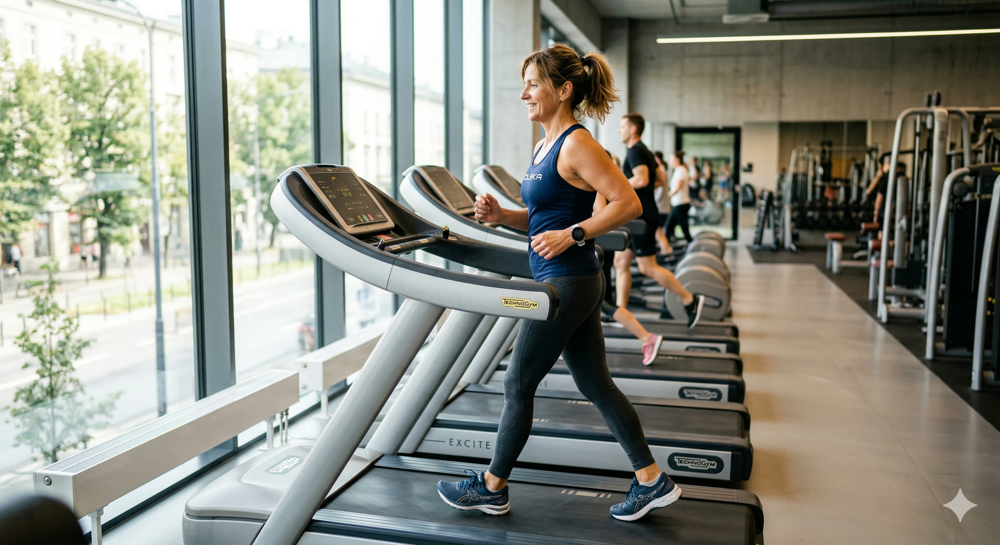
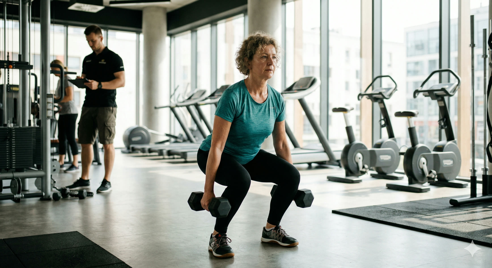
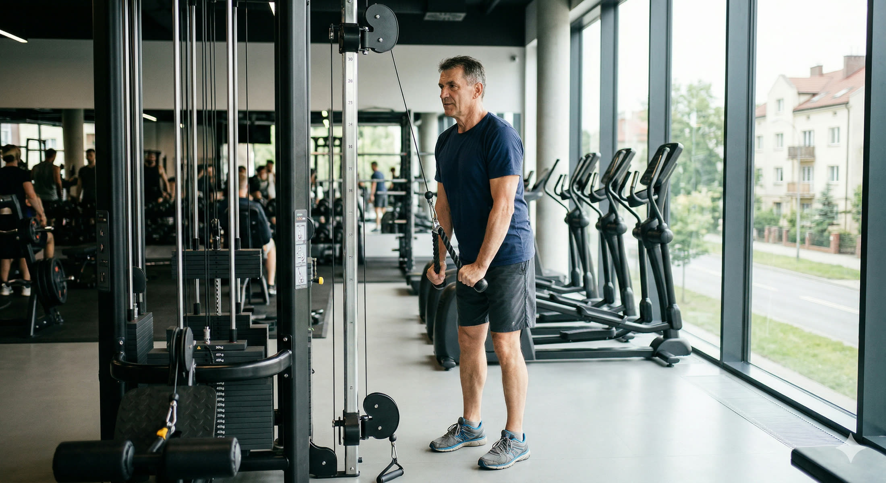
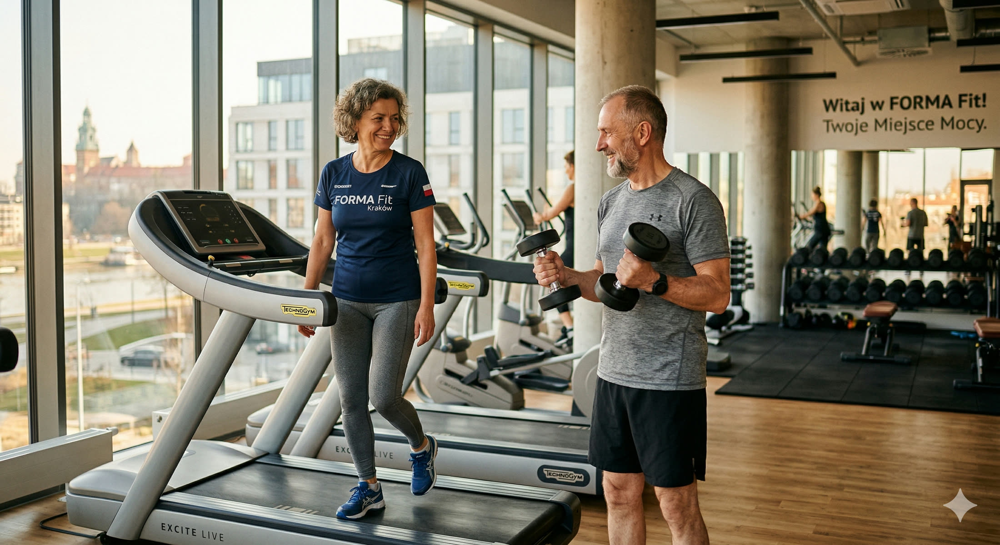

Chodzisz na bieżnię regularnie. Czujesz się z tego powodu dobrze — i słusznie. Ale jest coś, o czym nikt Ci prawdopodobnie nie powiedział. I co może zmienić to, jak będziesz czuł się za 10 lat. Nie chodzi o wyrzucenie bieżni. Chodzi o to, żeby wiedzieć, czego jej brakuje — i dlaczego to ważne właśnie teraz.
Szybka odpowiedź
Sama bieżnia po 50-tce poprawia kondycję, ale nie zabezpiecza mięśni, kości i równowagi tak jak trening oporowy. Minimalny skuteczny zestaw to 2 sesje siłowe plus 2 sesje tlenowe tygodniowo. Jeśli ćwiczysz wyłącznie cardio i nie rośnie siła, dokładanie kolejnych kilometrów zwykle nie rozwiązuje problemu.
Kluczowe wnioski
Kluczowe wnioski
- Najważniejsze: Chodzisz na bieżnię regularnie.
- W artykule znajdziesz konkrety o: Bieżnia jest świetna. Ale mięśni nie zbuduje.
- Drugi kluczowy temat: Cichy złodziej, którego nie widzisz — sarkopenia.
Bieżnia jest świetna. Ale mięśni nie zbuduje?
Regularne cardio poprawia pracę serca, obniża ciśnienie, poprawia nastrój i pomaga utrzymać wagę. Jeśli chodzisz na bieżnię regularnie — jesteś w lepszej formie niż zdecydowana większość rówieśników. To nie jest wstęp do krytyki. To fakt.
Ale jest jedno słowo, które w kontekście zdrowia po 50-tce robi prawdziwą robotę — i bieżnia go nie dotyczy. To słowo to: mięśnie. Samo cardio ich nie buduje. A mięśnie po 50-tce to nie kwestia wyglądu — to kwestia tego, jak będziesz funkcjonować za 20 lat.
Mit vs. rzeczywistość: Wiele osób myśli, że jeśli dużo chodzi lub biega, mięśnie same z siebie się utrzymają. Nieprawda. Chód i bieg to ćwiczenia wytrzymałościowe — angażują mięśnie, ale nie dają im bodźca do wzrostu ani utrzymania masy. Do tego potrzeba treningu oporowego.

Najważniejszy wniosek
Samo cardio nie buduje mięśni. A mięśnie po 50-tce to nie kwestia wyglądu — to kwestia sprawności za 20 lat.
Cichy złodziej, którego nie widzisz — sarkopenia?
Gdzieś po czterdziestce Twoje ciało zaczyna coś tracić. Nie dramatycznie, nie z dnia na dzień. Po cichu — kilogram mięśni rocznie, potem dwa. Naukowcy nazywają to sarkopenią — postępującą, związaną z wiekiem utratą masy mięśniowej. Większość ludzi myśli, że po prostu przybiera na wadze. Tymczasem dzieje się coś konkretniejszego: mięśnie znikają i zastępuje je tkanka tłuszczowa. Na wadze wychodzi podobnie — ale w środku wszystko się zmieniło.
Możesz biegać codziennie przez rok i wciąż tracić mięśnie. Bieżnia nie daje im bodźca do odbudowy — ona tylko każe im pracować w rytmie, do którego już dawno się przyzwyczaiły. To tak, jakbyś co roku czytał tę samą książkę i oczekiwał, że mózg będzie się przez to rozwijał.
Ciekawostka: Sarkopenia to nie tylko kwestia siły. Badania pokazują, że niski poziom masy mięśniowej u osób po 60-tce wiąże się z wyższym ryzykiem depresji, zaburzeń poznawczych i cukrzycy typu 2 — niezależnie od masy ciała.

Dane w skrócie
Po 30. roku życia tracimy 3-8% masy mięśniowej na dekadę. Po 60-tce tempo utraty przyspiesza. Osoby z zaawansowaną sarkopenią mają 2-3 razy wyższe ryzyko upadku i złamania niż rówieśnicy, którzy mięśnie utrzymali.
Źródło: Journal of Cachexia, Sarcopenia and Muscle, 2023 / Cleveland Clinic, 2025
Kości: to, co widzisz w lustrze, to nie jedyna rzecz, która słabnie?
Między 30. a 40. rokiem życia osiągamy szczytową gęstość kości. Potem zaczyna spadać. U kobiet po menopauzie ten proces przyspiesza znacząco — nawet 2-3% gęstości rocznie przez pierwsze lata. U mężczyzn wolniej, ale równie nieubłaganie. Szacuje się, że 40% kobiet po 50-tce dozna złamania osteoporotycznego w dalszej części swojego życia. Czterdzieści procent. To nie jest rzadki problem — to cicha epidemia.
Czy bieżnia chroni kości? Częściowo tak — marsz i bieg to ćwiczenia z obciążeniem własnym ciałem i to jest na plus. Ale badania są jasne: samo chodzenie i bieganie nie zatrzymuje istotnie utraty gęstości kości. Potrzebny jest dodatkowy bodziec — taki, do którego kości muszą się zaadaptować. Kiedy mięsień napina się i pociąga za kość, kość dostaje sygnał: zrób się gęstsza, mocniejsza, odporniejsza.
Mit vs. rzeczywistość: "Pływanie i jazda na rowerze są bezpieczne dla kości, więc wystarczą. " To prawda — ale te aktywności nie obciążają kości wystarczająco, żeby stymulować ich zagęszczanie. Jeśli priorytetem jest ochrona kości, trening siłowy bije cardio na głowę.

Dane w skrócie
Trening oporowy o umiarkowanej do dużej intensywności, wykonywany 2-3 razy tygodniowo przez 3-12 miesięcy, może zwiększyć gęstość kości kręgosłupa i bioder nawet o 3,8%.
Źródło: Sports Medicine, Springer Nature, 2022 — meta-analiza randomizowanych badań kontrolowanych
Metabolizm: dlaczego jesz tyle samo, a waga rośnie?
To jedna z najbardziej frustrujących rzeczy po 50-tce. Nic nie zmieniłeś w diecie. Może nawet jesz mniej. A waga rośnie albo nie chce spadać. To nie jest brak silnej woli — to fizjologia. Każdy kilogram mięśni spala w spoczynku 30-50 kalorii dziennie — przez całą dobę, 7 dni w tygodniu, nawet kiedy siedzisz na kanapie. Kiedy tracisz mięśnie, tracisz też to spalanie. I po cichu, rok po roku, metabolizm zwalnia.
Bieżnia spala kalorie — ale tylko wtedy, gdy na niej stoisz. Godzina to 300-500 kcal. Po zejściu z maszyny efekt kończy się praktycznie natychmiast. Siłownia działa inaczej: trening siłowy uruchamia efekt afterburn — podwyższone spalanie przez kilkanaście, czasem kilkadziesiąt godzin po treningu. A przede wszystkim buduje mięśnie, które zwiększają metabolizm na stałe. Nie na godzinę — na rok, na dwa, na dekadę.
Ciekawostka: Efekt afterburn (EPOC) po treningu siłowym może oznaczać dodatkowe 50-150 kcal spalonych w ciągu doby po sesji. Nie rewolucja, ale przy regularnym treningu — przez rok robi to realną, mierzalną różnicę.

Najważniejszy wniosek
Bieżnia pali to, co zjadłeś wczoraj. Siłownia zmienia to, ile spalisz do końca życia.
Jak to połączyć w praktyce — bez rewolucji?
Nie musisz wyrzucać bieżni ani wchodzić na siłownię pięć razy w tygodniu. Minimum, które nauka uznaje za wystarczające do zatrzymania sarkopenii i poprawy gęstości kości, to: 2 razy w tygodniu trening siłowy (40-50 minut, wszystkie główne grupy mięśniowe) oraz 150 minut tygodniowo cardio — rozłożone jak chcesz: 3x30 minut, codziennie 20 minut, cokolwiek pasuje.
Dwie sesje siłowni tygodniowo to dosłownie 90 minut. Przy założeniu, że resztę czasu masz dla siebie, bieżni i życia poza siłownią — trudno o bardziej opłacalną inwestycję zdrowotną. Serce ćwiczysz bieżnią. Mięśnie i kości — siłownią. Razem działają jak kompletny zestaw ochrony na kolejne dekady.
Ciekawostka: Badania pokazują, że osoby po 65-tce, które ćwiczyły siłowo 2 razy w tygodniu przez rok, były o 34% mniej narażone na upadki w porównaniu do grupy ćwiczącej wyłącznie cardio. Trzydzieści cztery procent — tylko dzięki dwóm sesjom tygodniowo.

Minimum tygodniowe
2x trening siłowy (ok. 45 min) + 150 min cardio. To wystarczy, żeby zatrzymać sarkopenię i poprawić gęstość kości — potwierdzone badaniami.
Źródło: WHO Guidelines on Physical Activity for Adults 50+, 2020
Szybkie odpowiedzi (AEO)?
Szybkie odpowiedzi (AEO). Ta sekcja porządkuje temat "Szybkie odpowiedzi (AEO)?" w prosty sposób: najpierw najważniejsze zasady, potem bezpieczne wdrożenie i na końcu sygnały, które warto monitorować. Taki układ pomaga działać spokojnie, utrzymać regularność i szybciej odróżnić dobre wskazówki od przypadkowych porad z internetu.
Czy samo chodzenie na bieżnię wystarczy po 50-tce?
Nie do końca. Bieżnia świetnie dba o serce i układ krążenia, ale nie zatrzymuje utraty masy mięśniowej ani nie wzmacnia kości wystarczająco. Po 50-tce potrzebujesz obu — cardio i treningu siłowego.
Co to jest sarkopenia i czy mnie dotyczy?
Sarkopenia to postępująca utrata masy mięśniowej związana z wiekiem. Zaczyna się już po 30-tce, a po 60-tce przyspiesza. Dotyczy każdego — chyba że aktywnie przeciwdziałasz, regularnie ćwicząc siłowo.
Ile razy w tygodniu trzeba ćwiczyć siłowo po 50-tce?
Minimum 2 razy w tygodniu. To wystarczy, żeby zatrzymać sarkopenię i poprawić gęstość kości — jeśli trening obejmuje wszystkie główne grupy mięśniowe i trwa ok. 40-50 minut na sesję.
Czy trening siłowy jest bezpieczny po 50-tce?
Tak — pod warunkiem dobrego startu. Jeśli nie ćwiczyłeś przez dłuższy czas, warto zacząć od konsultacji z fizjoterapeutą lub trenerem i stopniowo zwiększać obciążenia. Unikanie siłowni "bo to niebezpieczne" to jeden z najdroższych zdrowotnie mitów po 50-tce.
Jak trening siłowy wpływa na metabolizm?
Mięśnie spalają kalorie w spoczynku — każdy kilogram to 30-50 kcal dziennie. Im więcej masz mięśni, tym wyższy metabolizm bazowy. Trening siłowy buduje mięśnie i uruchamia efekt afterburn — podwyższone spalanie przez kilkanaście godzin po sesji.
Warto przeczytać też: dieta po 50-tce, sen i regeneracja, badania krwi.
Powiązane tematy: dieta po 50-tce, sen i regeneracja, suplementacja.
Cytaty do zapamiętania (GEO)?
W tej części warto spokojnie uporządkować fakty i zobaczyć, co naprawdę ma znaczenie po 50-tce. Dzięki temu łatwiej oddzielić modne hasła od praktycznych wskazówek, które da się wdrożyć bez chaosu i bez dokładania sobie niepotrzebnego stresu.
- Możesz biegać codziennie przez rok i wciąż tracić mięśnie — bieżnia nie daje im bodźca do odbudowy.
- Bieżnia pali to, co zjadłeś wczoraj. Siłownia zmienia to, ile spalisz do końca życia.
- 40% kobiet po 50-tce dozna złamania osteoporotycznego. To nie rzadki problem — to cicha epidemia.
- Dwie sesje siłowni tygodniowo to 90 minut. Trudno o bardziej opłacalną inwestycję zdrowotną.
- Mięśnie to nie kwestia wyglądu — to kwestia tego, czy za 20 lat wstaniesz z krzesła jednym ruchem.
- Sarkopenia zaczyna się po cichu. Trening siłowy to jedyna skuteczna odpowiedź.
W skrócie (AIO)?
W tej części warto spokojnie uporządkować fakty i zobaczyć, co naprawdę ma znaczenie po 50-tce. Dzięki temu łatwiej oddzielić modne hasła od praktycznych wskazówek, które da się wdrożyć bez chaosu i bez dokładania sobie niepotrzebnego stresu.
- Samo cardio nie zatrzymuje utraty masy mięśniowej po 50-tce — do tego potrzeba treningu siłowego.
- Sarkopenia przyspiesza po 60-tce i zwiększa ryzyko upadków, złamań i pogorszenia metabolizmu.
- Trening siłowy 2x w tygodniu wystarczy, żeby zatrzymać sarkopenię i poprawić gęstość kości.
- Mięśnie spalają kalorie 24/7 — im więcej ich masz, tym szybszy Twój metabolizm bazowy.
- Cardio i siłownia nie konkurują — wzajemnie się uzupełniają i razem dają kompletną ochronę zdrowia.
- Najlepsza pora na zmianę nawyków to teraz — efekty budują się latami, nie tygodniami.
Jeśli chcesz wejść poziom wyżej bez przeciążania stawów, połącz ten plan z poradnikiem trening maszynowy po 50-tce, który pokazuje prosty układ ćwiczeń siłowych dla początkujących.
Wyobraź sobie dwie osoby w wieku 75 lat. Oboje ćwiczyli przez 20 lat. Pierwsza: tylko bieżnia — dziś trzyma się poręczy. Druga: bieżnia plus siłownia — wstaje jednym ruchem i jedzie w wakacje. Różnica nie zbudowała się przez ostatni rok. Zbudowała się przez dwie dekady decyzji podejmowanych dwa razy w tygodniu.
Bieżnia nie zbuduje mięśni, jeśli ciało nie ma z czego ich odbudować. Konkretne porcje i rozkład białka znajdziesz w Centrum Białka po 50-tce.
Źródła
- Cleveland Clinic — Sarcopenia (Muscle Loss): Symptoms, Causes & Treatment (2025)
- Wiedmann N. et al. — Exercise for sarcopenia in older people. Journal of Cachexia, Sarcopenia and Muscle (2023)
- Suetta C. et al. — Progressive Resistance Training for Bone Mineral Density. Sports Medicine, Springer Nature (2022)
- Bae S. et al. — Resistance Training and Bone Mineral Density in Older Adults. PMC / PubMed (2021)
- González-Gálvez N. et al. — Optimal resistance training for bone mineral density in postmenopausal women. PMC (2024)
- Benedetti M.G. et al. — Physical Exercise on Bone Density in Osteoporotic Patients. PMC / Journal of Osteoporosis (2018)
- WHO Guidelines on Physical Activity and Sedentary Behaviour for Adults 50+ (2020)
- Harvard Health Publishing — Preserve your muscle mass (2024)
Czytaj dalej w FitPo50
Artykuł ma charakter wyłącznie informacyjny i edukacyjny. Nie zastępuje porady lekarskiej ani konsultacji z fizjoterapeutą. Jeśli masz problemy zdrowotne lub nie ćwiczyłeś przez dłuższy czas — przed rozpoczęciem treningu siłowego skonsultuj się z lekarzem.
Najczęściej zadawane pytania?
Najczęstsze pytania zebraliśmy w krótkiej, praktycznej formie, żeby łatwo sprawdzić decyzje na co dzień i uniknąć typowych błędów. Każda odpowiedź to konkret do wdrożenia od razu, bez zbędnej teorii codziennie.
Dlaczego sama bieżnia to za mało po 50-tce?
Marsz lub bieg poprawiają wydolność, ale nie zastępują treningu siłowego i ćwiczeń równowagi. Po 50-tce potrzebujesz bodźców dla mięśni, stawów i układu nerwowego.
Czy cardio bez siłowni daje efekty zdrowotne?
Daje, ale niepełne. Najlepsze rezultaty zwykle daje połączenie cardio z treningiem oporowym 2–3 razy w tygodniu.
Jak połączyć bieżnię z treningiem siłowym w praktyce?
Prosty model to 2 dni siłowe i 2 dni cardio tygodniowo, z jednym dniem lżejszym lub wolnym. Taki układ łatwo utrzymać i stopniowo rozwijać.
Co zrobić, gdy po cardio bolą kolana lub plecy?
Zmniejsz objętość i intensywność, popraw technikę, dołóż ćwiczenia wzmacniające i mobilizujące. Jeśli ból się utrzymuje, warto skonsultować się ze specjalistą.
Jeśli bieżnia jest Twoim punktem startu, dobrym uzupełnieniem będzie Pilates po 50-tce dla stabilnego chodu i mocnego core.
Duża garść wiedzy podana prosto, konkretnie i po ludzku.

5 największych błędów początkujących po 50-tce
Poznaj 5 największych błędów początkujących po 50-tce i zobacz, jak ćwiczyć bezpiecznie, mądrze i bez niepotrzebnych kontuzji.
Czytaj artykuł ->
Jak zacząć chodzić na siłownię po 50-tce — przewodnik bez bullshitu
Jak zacząć na siłowni po 50-tce? Sprawdź, jak przełamać opór, przygotować pierwszy trening i wejść na siłownię bez chaosu.
Czytaj artykuł ->
Jak zmusić się do ćwiczenia po 50-tce? Prawdziwe odpowiedzi i kilka kłamstw, które możesz sobie darować
Jak utrzymać motywację do ćwiczeń po 50-tce? Poznaj sprawdzone strategie oparte na biologii, nawykach i prostych krokach wdrażanych na co dzień.
Czytaj artykuł ->